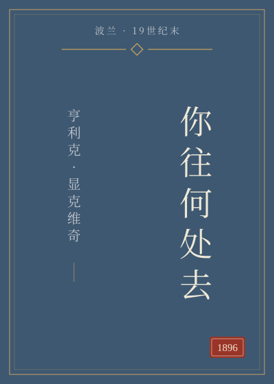
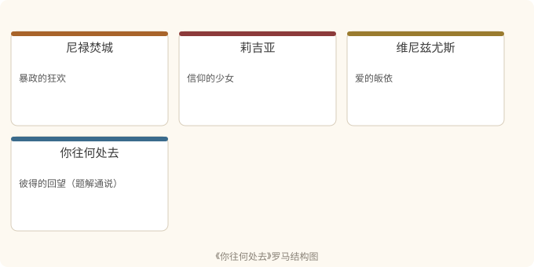

你往何处去
一、基本信息
| 作者 | 亨利克·显克维奇 |
|---|---|
| 成书/出版 | 1896年出版（Britannica 语境；Nobel 1905） Henryk Sienkiewicz — Encyclopaedia Britannica（百科全书） |
| 国别/地区 | 波兰 |
| 时代 | 近代 · 19世纪末 |
| 体裁 | 长篇历史小说 |
| 语言 | 波兰语 |

《你往何处去》罗马结构图（主题·结构图）
二、创作背景
Britannica（B269）：Quo Vadis?——'a historical novel set in Rome under Nero, which established Sienkiewicz's international reputation'（尼禄治下罗马的历史小说，确立其国际声誉）。
显克维奇 1905年诺奖（B269）。
三、内容脉络
罗马将军维尼兹尤斯与基督教徒莉吉亚的爱情——尼禄焚城的暴政（通说待核）。
彼得的殉道：'主往何处去'（题解通说待核）。
四、主要人物表
| 人物 | 身份 | 说明 |
|---|---|---|
| 维尼兹尤斯 | 罗马将领 | 皈依者（通说待核） |
| 莉吉亚 | 基督教徒 | 爱的对象（通说待核） |
| 尼禄 | 皇帝 | 焚城暴君（通说待核） |
五、主题与艺术特点
- 早期基督教与罗马暴政（通说）。
- '你往何处去'的题解（通说待核——Quo vadis, Domine）。
- 历史小说的国际声誉（B269）。
六、影响与评论
- Britannica：确立国际声誉（established……international reputation）（B269）。
Henryk Sienkiewicz — Encyclopaedia Britannica（百科全书） - 1905年诺贝尔文学奖（B269）。
Henryk Sienkiewicz — Encyclopaedia Britannica（百科全书）
七、阅读建议
难点
- 尼禄罗马史。
- 基督教早期术语。
- 《你往何处去》（上海译文出版社林洪亮译本？——通说待核）。
- 英文原版（公有领域）。
显克维奇三部曲之外的第一站。
八、待核实
- 1896年出版（波兰《新闻报》连载说）核对。
- 维尼兹尤斯/莉吉亚人名核对。
- 林洪亮译本信息待核。
本页主要来源
亨利克·显克维奇的其他收录作品：你往何处去